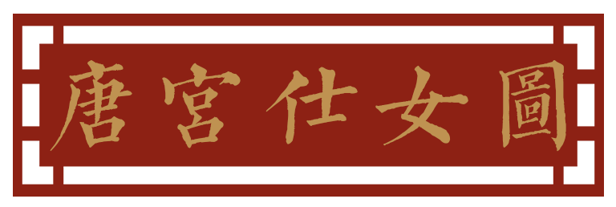
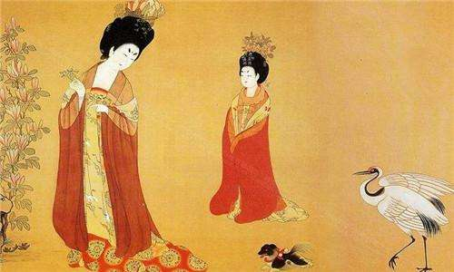

《唐宫仕女图》相传出自周昉之手。他出身于名门贵族，所以，他对于唐代贵族奢华的生活非常熟悉。在他的仕女画中，主角不是那些烈女、贤妇、仙女等，而是取材于现实生活，将那些贵族妇女的日常活动展现出来，从而迎合了中晚唐时期大官僚地主们的审美意识。
唐朝初年百废待兴，自然灾害频发，初唐时期的社会风气较为简朴，各项制度均沿袭旧制不仅是国家政策，风俗服饰上也莫不如是。初唐前期的衫(糯、袄)，仍是紧身、圆领衫糯的开口，出现了各种形式的袒领，圆领以桃、窄袖，后期又有所改进，加大了心领为主，更能够体现女性胸部的曲线美。
裙在古代称为“裳”，男女皆可穿，传至隋唐时期，裙已经转变为女性的专用。唐初流行紧身窄小的服装款式，颜色多为青绿色，腰高至胸部、长至齐地。由于古代帛布幅面较窄，为方便行走，制作每条长裙时都要用几幅帛布拼接而成，初唐时的裙大多是由六幅布制成。较之前朝，此时增加了长裙的幅面和裙长，使得长裙更加的飘逸、立体感更强、裙身更为修长，使穿着者给人以俏丽修长的感觉。
隋唐时帔有两种穿法，一种是披绕在肩背上，使两端自然下垂，长可至膝盖，走起路来随风飘扬，显得柔美多姿。但这种帔帛可能过长，很容易造成行动不便，因此只有在室内或参加宴会时才会使用。另一种较短的帔子，披在肩上，系在胸前，类似于现代的小斗篷，相比前一种则更为实用。
总之，初唐时期，朝政新立，百废待兴，刚刚恢复稳定生活的士庶女性更趋向于沿袭旧风。即使此时胡服已慢慢开始出现在大唐的土地上，但仍未能够造成大范围影响，到了初唐晚期才慢慢显现出盛唐时的影子。
盛唐在贞观之治的良好经济基础下，城市日渐繁华，生活富庶，基本的生活条件大都得到满足，在此背景之下，女性开始追求更高层次的服饰时尚，出现了多姿多彩的女性服饰文化。这一时期的社会审美也发生了巨大变化，以胖为美越来越成为社会的风尚，尤其是贵族女子，从唐初的苗条纤细逐渐变为丰腆，穿衣风格也由朴素到宽大奢华。而庶民女子仍然要为生活奔波，不能像贵族女子一样追求宽大奢华的服饰之美，出于行动方便上的考虑，要么选择改良后领、袖更为紧窄的传统糯裙装，要么在社会大风气的影响下，选择着男装或穿胡服。因此这一时期传统的糯裙装在整个社会的审美巨变之下也发生了较大改变，除此之外，出现了更具特色的女着男装和胡服的风尚。裙的种类繁多，款式新颖大胆，整体风格富丽堂皇，奢侈靡丽，是盛唐社会繁荣的象征。
总结唐代三种形式的装扮可知，唐代最为明显的是出现了胡服风尚。另外，传统的糯裙装也经历了巨大的变化，不仅越来越宽大肥美，露透之风也越来越为盛行。
实际上，不论是什么时期，哪种形式的服饰，其流行于唐代都与胡风密不可分。这一时期的唐代与外族交往频繁，作为统治集团的关陇士族更是带有胡汉杂糯的血统，胡风影响如此之深也就不足为奇了。根据初唐、盛唐和中晚唐的时间划分，胡服可分为三个阶段，初唐的胡服样式为:头戴篡篱或帷帽，身着窄袖衫、条纹裤，腰系蹼馒带，脚穿胡靴。盛唐时期则是全套的胡服装备，着胡衫、戴胡帽、穿锦靴，还有后来流行的回鹃装。中晚唐时期则以时世妆和胡式发髻最为流行。
唐代女性服饰的变化集中反映了唐代民族融合的演进过程。服饰是文明的窗口，是思想的外在表现，服饰史就是人类文明的发展史，是一个民族一个朝代的社会风貌和社会心理的反映。无论古今，无论何种民族，必然处在多种文化并存的环境中，在此之下，“继承”与“发展”就是其中最为重要的课题。